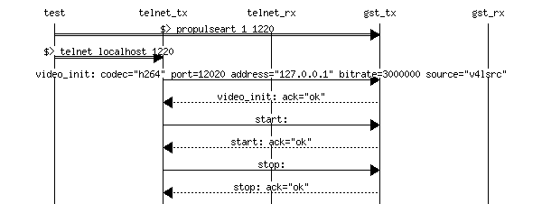
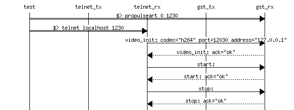
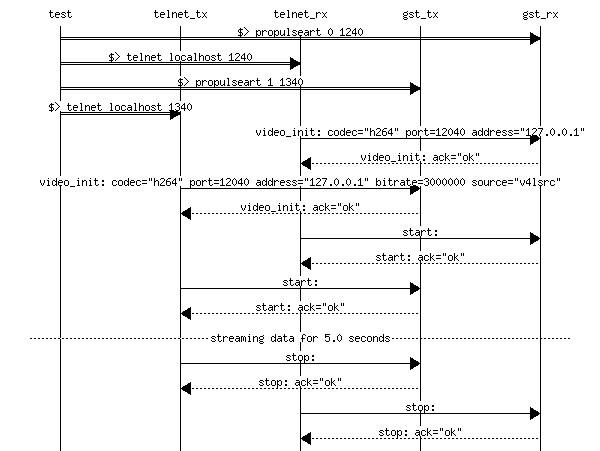
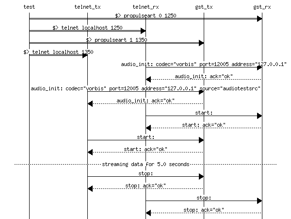
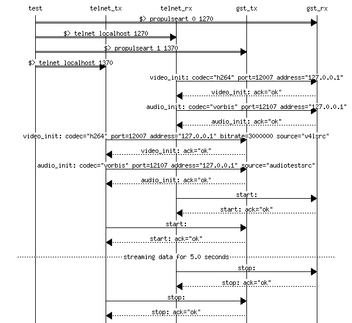

System test telnet propulseart: Runs a series of streaming tests with propulseart. The tests starts and stop various propulseart processes in sender and receiver mode, and controls them via a telnet protocol.
create a video sender process that waits for connections. The process is controlled from port 1220 and its videostream is set on port 12020 The port numbers are printed for debuggind convenience. The process is then stopped without any streaming. This tests that the process exists and responds to basic commands.
Same as test2, but this time the process is started in receiver mode
Finally, we get some streaming going: a receiver and a sender are started and stopped. During the 5 second sleep, the video stream should appear on the screen. This test should check for actual transfered data when the command is available.
Streaming audio test betweeen 2 instances of propulseart.
This test is a streaming test where audio and video are streamed simultaneously with synchronisation. The commands for this test are not implemented yet.
